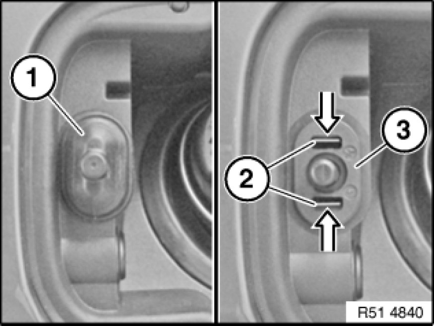
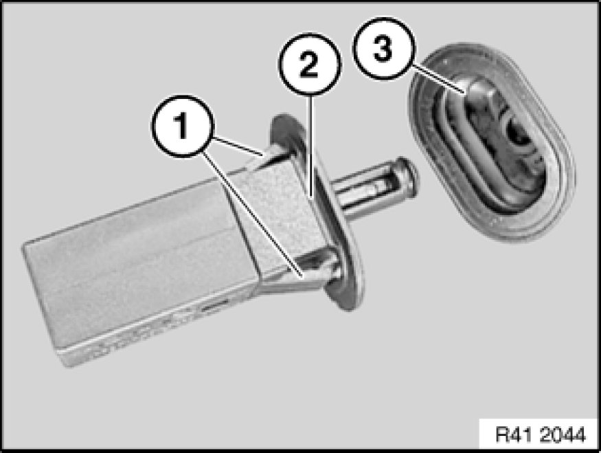

Removing and Installing/Replacing Bump Stop with Ejector for Filler Flap
51 17 400 - Removing and installing/replacing bump stop with ejector for filler flap

Release cover (1).
Press catches (2) together and pull out ejector (3).
Installation:
Install ejector (3) with fitted cover (1).

Installation:
Catches (1) on ejector (2) must not be damaged.
Make sure cover (3) is correctly seated on ejector (2).